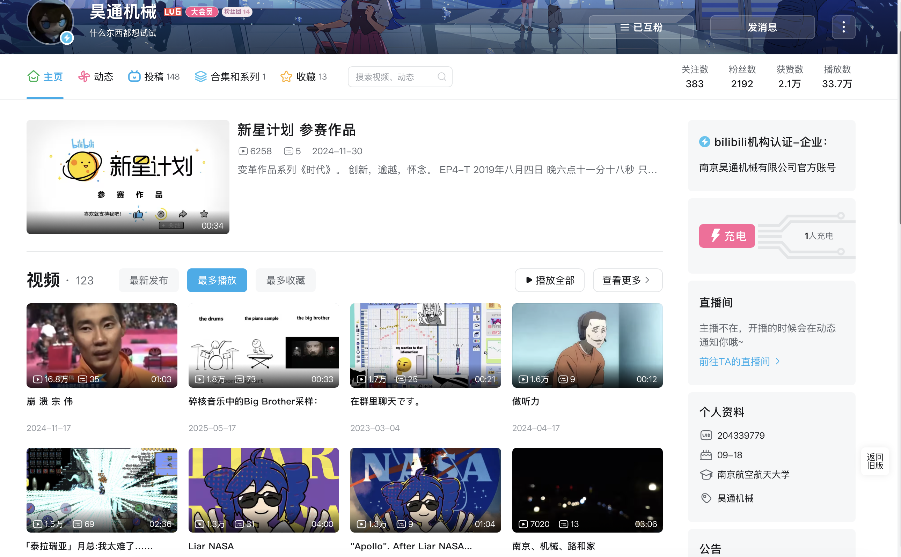

HTWallpaper
简单好用的视频转静态壁纸软件。基于 FastAPI、原生前端、FFmpeg 与系统壁纸接口， 支持视频抽帧、立即切换、定时轮换、色调过滤、多屏模式和托盘启动。
OPEN REPOXUE RUO MI / HAOTONG MACHINE / VITA-CHARA
个人名义是薛若米，昊通机械是公司与创作厂牌。这里不是普通简历，而是一张数字矩阵里的个人航图： QQ 空间记录旧坐标，B 站保存音 MAD 与视频表达样本，GitHub 公开开发轨迹。

BILIBILI SIGNAL CAPTURE
B 站主页显示：投稿 148、视频 123、粉丝 2192、获赞 2.1 万、播放 33.7 万。 这里是音 MAD、梗、音乐采样、游戏片段、生活记录和作品参赛记录的公开入口。
WORKS / BUILD LOG
简单好用的视频转静态壁纸软件。基于 FastAPI、原生前端、FFmpeg 与系统壁纸接口， 支持视频抽帧、立即切换、定时轮换、色调过滤、多屏模式和托盘启动。
OPEN REPO主页截图里能看到“新星计划 参赛作品”、Big Brother 采样、Liar NASA、Apollo 后续等音画实验。
OPEN SPACE从 2021 年建立公开身份，到 mdf、贡献蛇、HTWallpaper 与本站，代码坐标逐渐成形。
OPEN PROFILEQQ 空间是更早的互联网生活档案，保存熟人社区里的说说、相册与个人记忆。
OPEN QZONEGITHUB / PUBLIC DEV MATRIX
通过 GitHub 公开 API 查询：包含薛若米名下公开仓库，以及 commit search 可见的外部参与仓库。 私有库、未关联 ViTa-Chara 作者身份的提交不会出现在这里。
本站源码。把个人名义、公司身份、B 站内容、QQ 空间与 GitHub 作品整合为数字矩阵主页。
OPEN视频转静态壁纸工具，支持抽帧、色调过滤、多屏、定时轮换、托盘运行和系统壁纸集成。
OPEN个人 GitHub profile 仓库，贡献蛇动画记录持续开发的轨迹。
OPEN2022 年公开仓库，作为早期代码坐标收录进开发矩阵。
OPEN用于人力 Vocaloid 或人声修音的应用。公开 commit 显示参与 WORLD 拉伸尾音、触控板操作等修复。
OPENKIRAKIRA 动画社交网络前端，公开 commit 显示参与 Nuxt / Vue 前端维护。
OPEN音 MAD 相关社区前端项目。公开 commit 显示参与头像更新与 Promise 修复。
OPENOTOMAD / SAMPLE CONSOLE
LIVE TERMINAL
> sample_console ready > click a pad to inspect otomad node > waiting_for_input...
MEME SIGNAL WALL / AUTO FIXED GIF SUFFIX
已按文件真实格式自动修复引用：7 个实际为 GIF 的 `.jpg` 表情包现在通过 `.gif` 规范副本加载。 这些素材被压成统一的黑白点阵风格，作为薛若米网络语气的反应层。
ACTIVE MEME NODE
批准、通过、可以上车。适合作为“这个想法能进昊通矩阵”的确认信号。
> meme_node selected: approve > suffix_status: jpg source / jpg output > matrix_filter: active
TRACE ROUTE
从熟人社区开始记录生活，互联网先成为个人记忆的容器。
ViTa-Chara 账号上线，薛若米开始以公开仓库记录开发路线。
主页展示出高播放内容、参赛作品与音 MAD / 音乐采样方向，表达路线形成可回看的样本库。
桌面壁纸工具从想法走到可公开展示，成为昊通地图里的关键作品。
把 GitHub、B 站、QQ 空间和作品线索压缩成一个可继续扩展的个人主页。
试试 Konami Code ↑↑↓↓←→←→BA